In photography, working with light is truly an art. Use it well, and you get great shots in minutes. As for the secrets behind it:
Best outdoor light：around the hour after sunrise and the hour before sunset. The sun sits low. Under its low-angle light, soft rays cast long shadows. An ordinary view gains texture, and the frame gains depth.
Find a high spot with a wide view. The wider the view, the better the result. Ideally, as the sun rises, the light first falls on the clouds. At that moment the cloud colors are at their best.
Dawn
Dusk
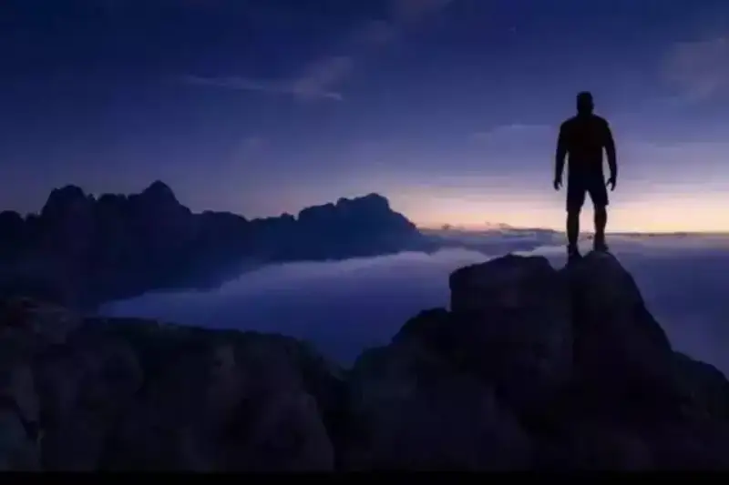
Portraits and landscapes shot in the golden hour come out best. The mountains cast shadows, and a person's shadow stretches long. The portraits turn out surprisingly striking. Because the light is soft, you can often point the camera straight at the sun for highly artistic effects.
Use window light well
Use the sunlight that streams through a window. This light shapes form well and casts good shadows. When you place a reflector opposite the window to soften the shadows from the source, the result is soft and elegant. It works a light, gentle touch on a person's face.
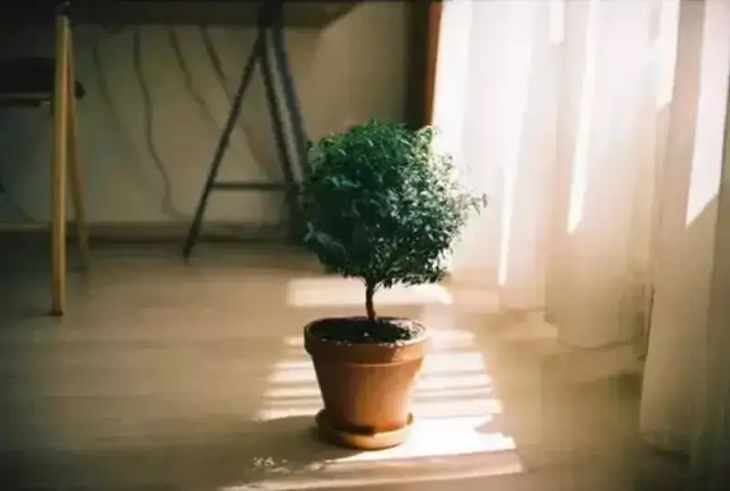
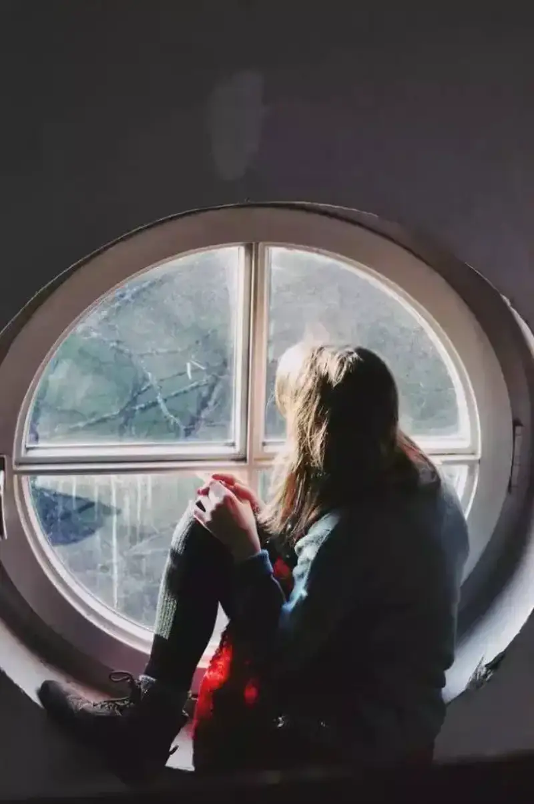
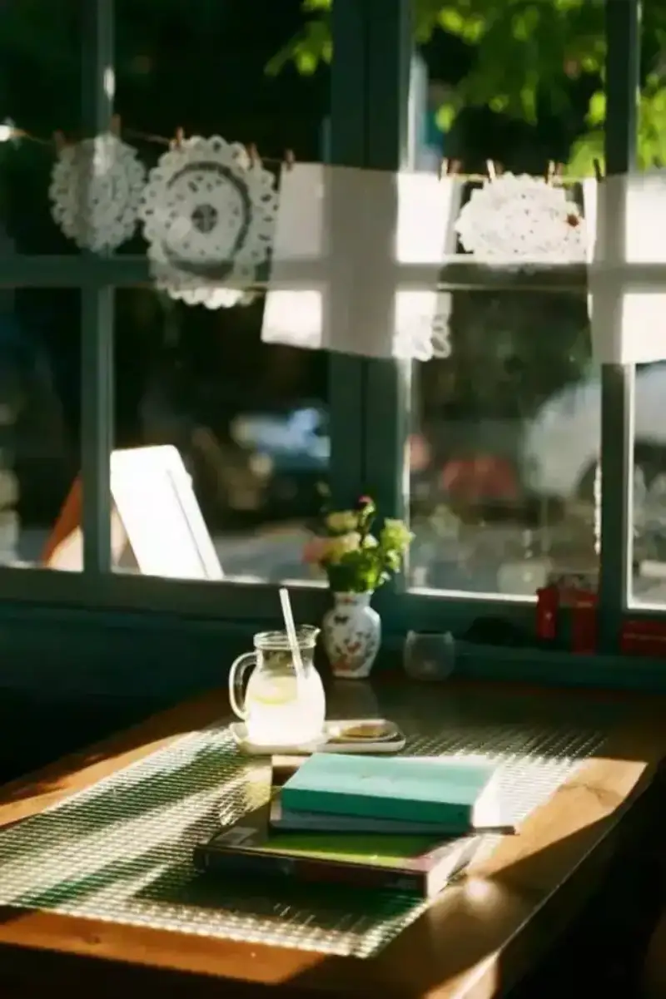
Note:
1. Change the distance between the subject and the window to fix uneven lighting on the face.
2. When you shoot a portrait by window light, a small, light-toned room reflects more light than a large, dark room, so the background is brighter.
3. Adjust the strength of the reflected light and the tone of the background by drawing the curtains or closing them. With the curtains in different states, you can simulate the feel of different direct light to your taste.
Use diffused light
Diffused light has a clear edge when you show a local scene or subjects with strong color contrast. On a cloudy or rainy day, the outdoor light is very soft and diffused. Portraits in this light come out well. Diffused light is even and soft, and the lit objects and people have no clear lit side. Its weakness is a flat frame.
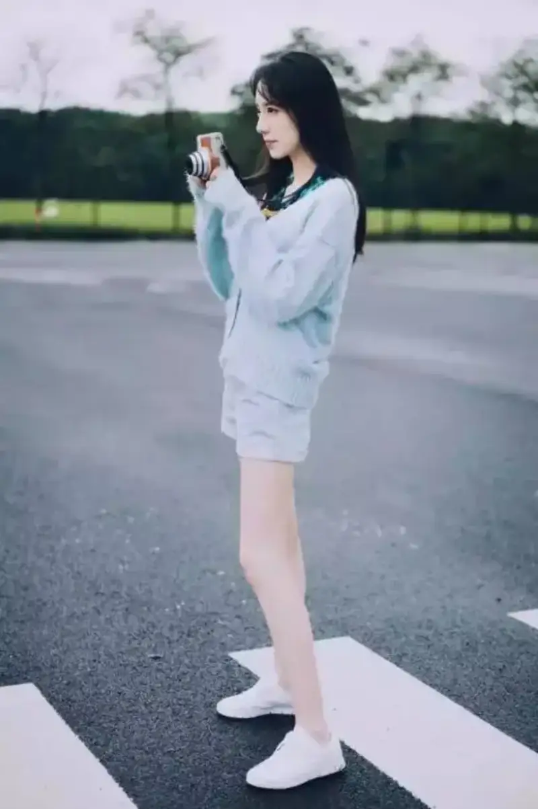
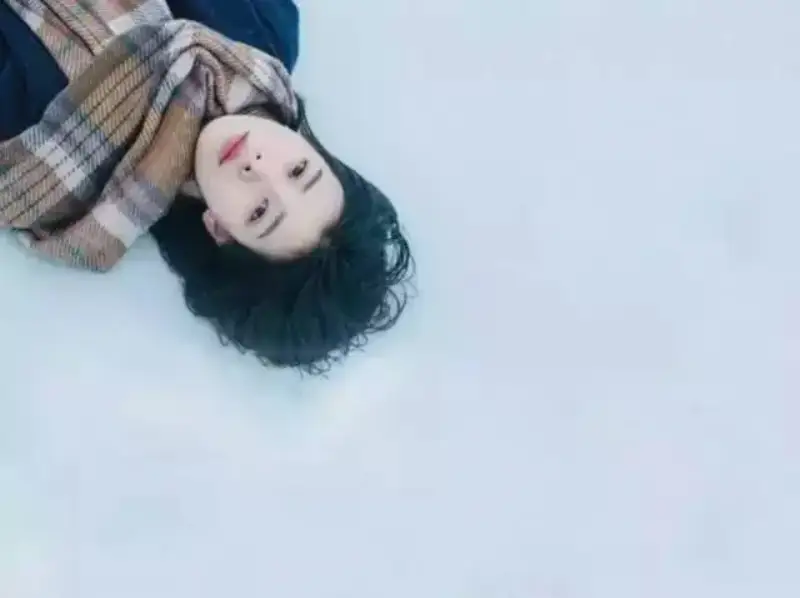
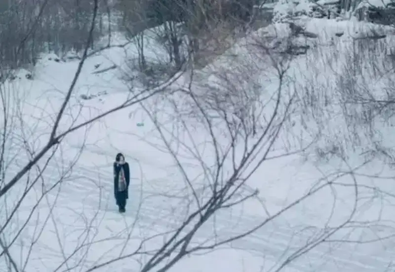
Note:
1. When you use sky light or ambient light to make lit and dark sides, choose the angle of light carefully. It must serve the shaping of the person.
2. Watch the balance of tone and color, and set off the visual center.
Side light
Artistic photography often uses side light. Side light lets a raised part of the face or body block the direct light and form shadow. It shows the outline of the person and builds a light-dark contrast. With this contrast, the image looks lively and carries strong artistic charm.
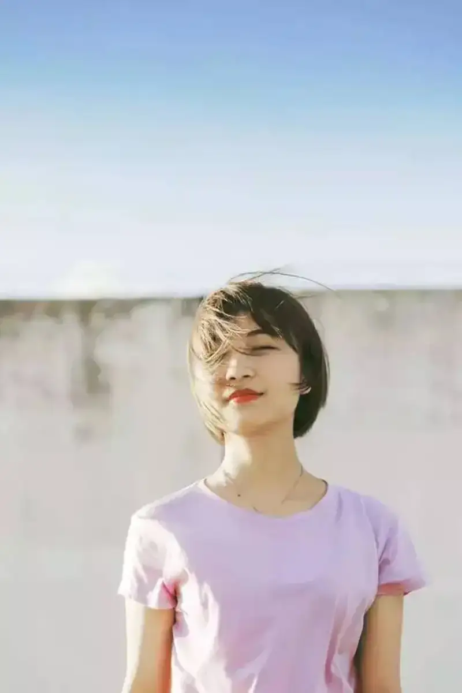
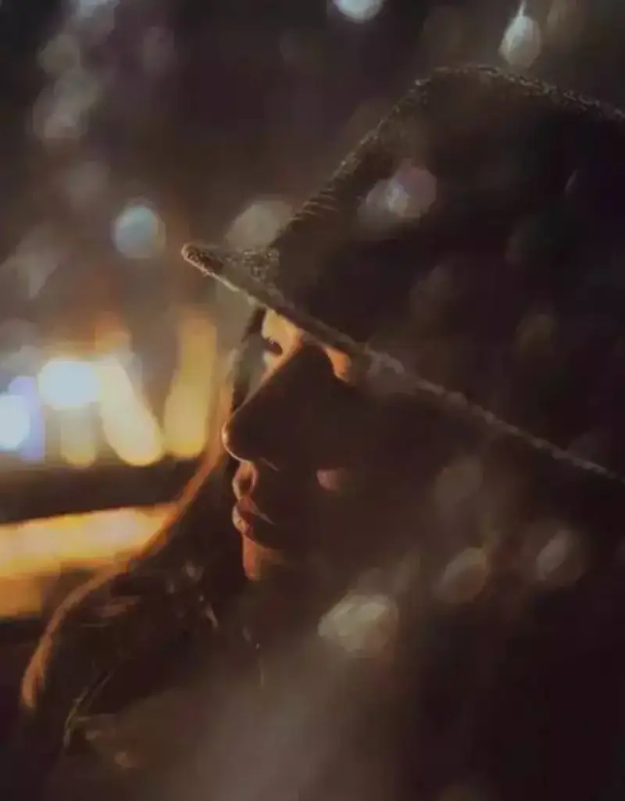
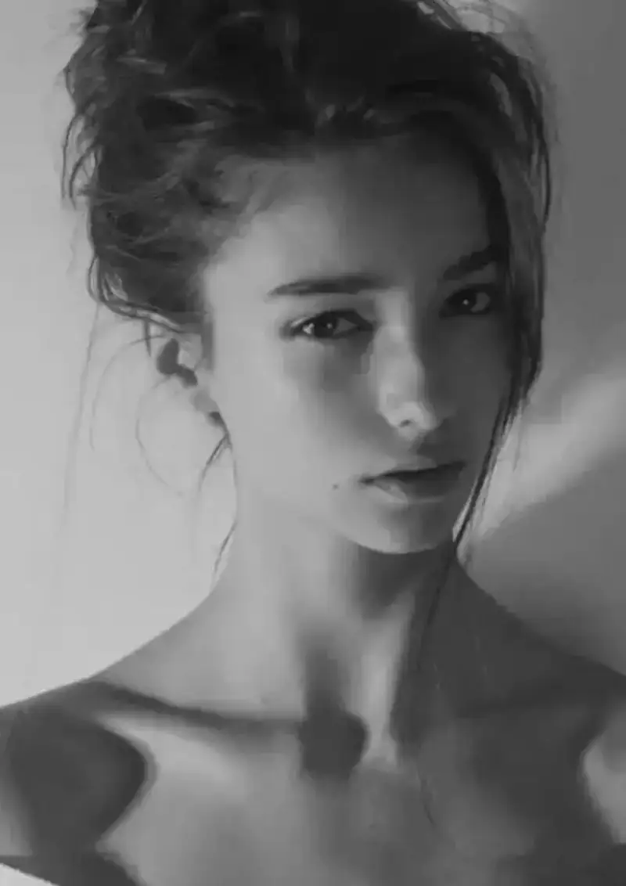
Note:
1. Watch the ratio of lit side to shadow in the frame. Adjust it by changing the angle between the light direction and the camera direction.
2. Control the light contrast. The lighting ratio should not be too high, especially for portraits.
3. Under side light, if the contrast is high and the background colors are messy, use a wide aperture to set off the person's shape. Use the focus-blur contrast to express a sense of space and subject.
Backlight
In backlight, a person's hair looks clearer and prettier, and the edge of the body shows. The whole person becomes more dimensional. That is a key reason many people like to shoot in backlight.
To avoid a "black face" in backlight, try exposure compensation. Raise the exposure to brighten the face. But this also lifts the whole photo, so the background gets brighter too and loses detail. A better way is to use a reflector to bounce light onto the face, so the whole image exposes normally.
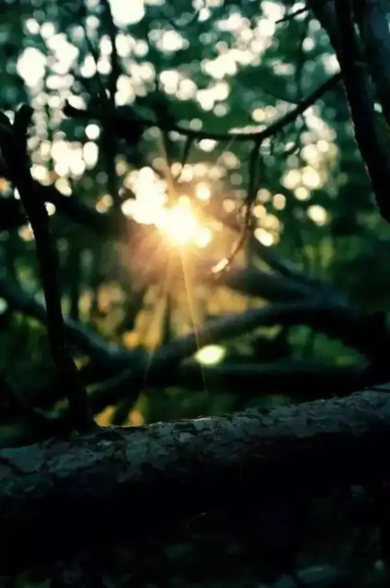
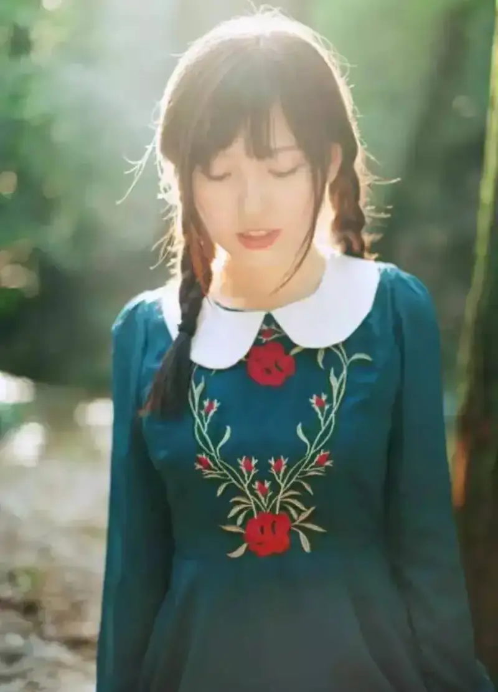
Note:
1. Backlight can produce a bright rim light around an object and outline its shape strongly.
2. For see-through subjects such as flowers and trees, use a backlit position. The lit subject shows stronger texture.
3. When strong flare appears in the frame, compose carefully. Shift the lens a little so the flare does not cover the subject.
4. Backlight can hurt autofocus accuracy. Switch to manual focus for precise focus.
5. Do not stare at the sun through the viewfinder for long, or you may damage your eyesight.
Use shadow
In photography, people often ignore the role of shadow, and even avoid it on purpose. But shadow is still a lively element in many photos. Think for a moment, and you can use shadow creatively to improve your work.
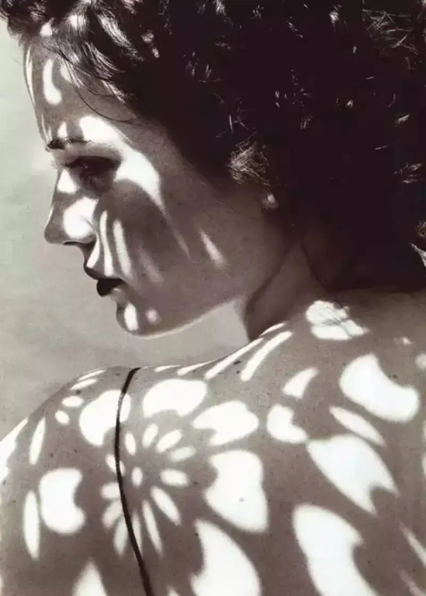
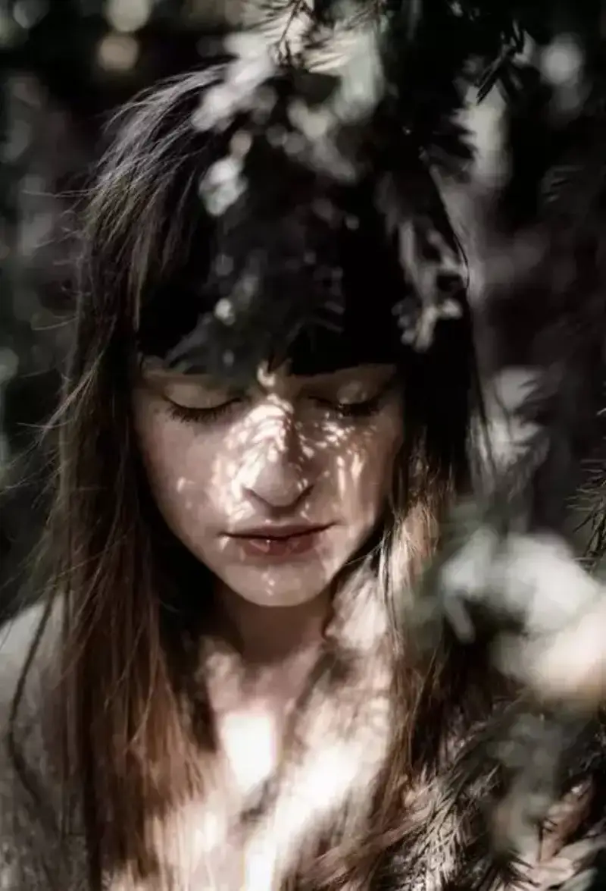
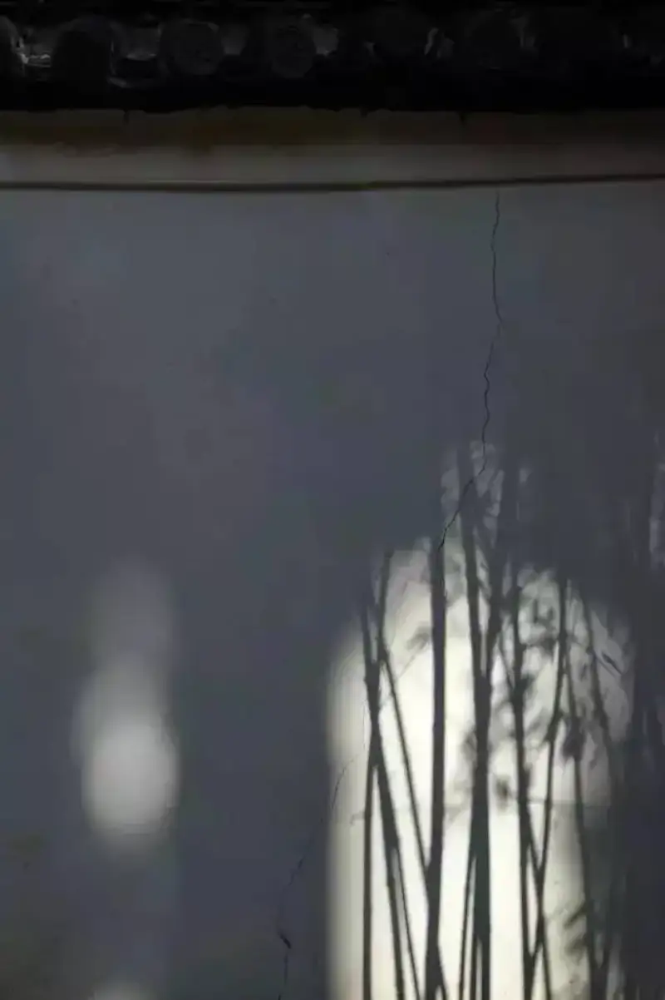
Note:
1. Watch the position, and avoid dappled shadow, especially around the eyes and nose.
2. For a person in shadow, work more on the composition to find the effect you want most.